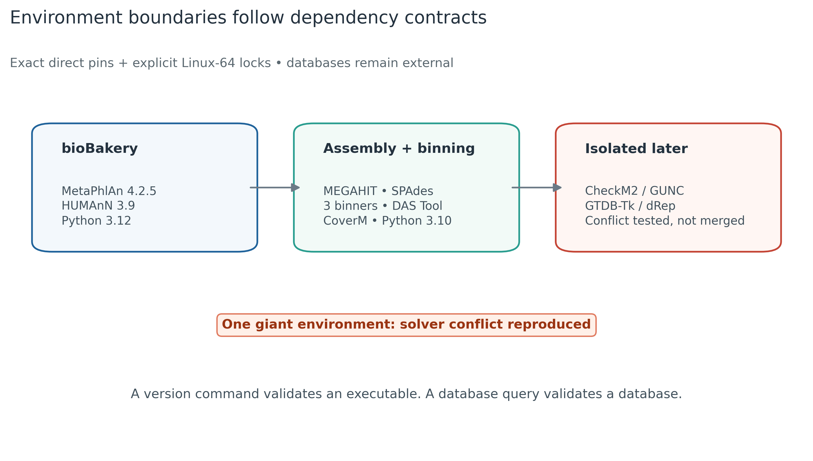
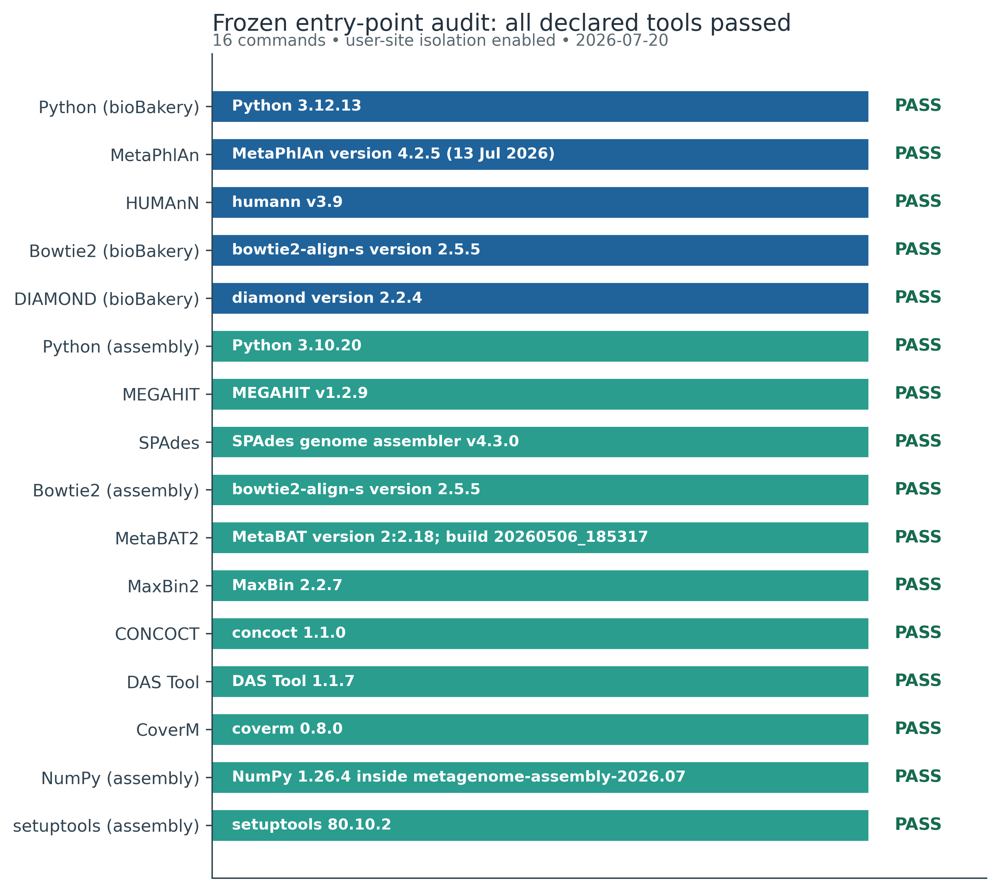
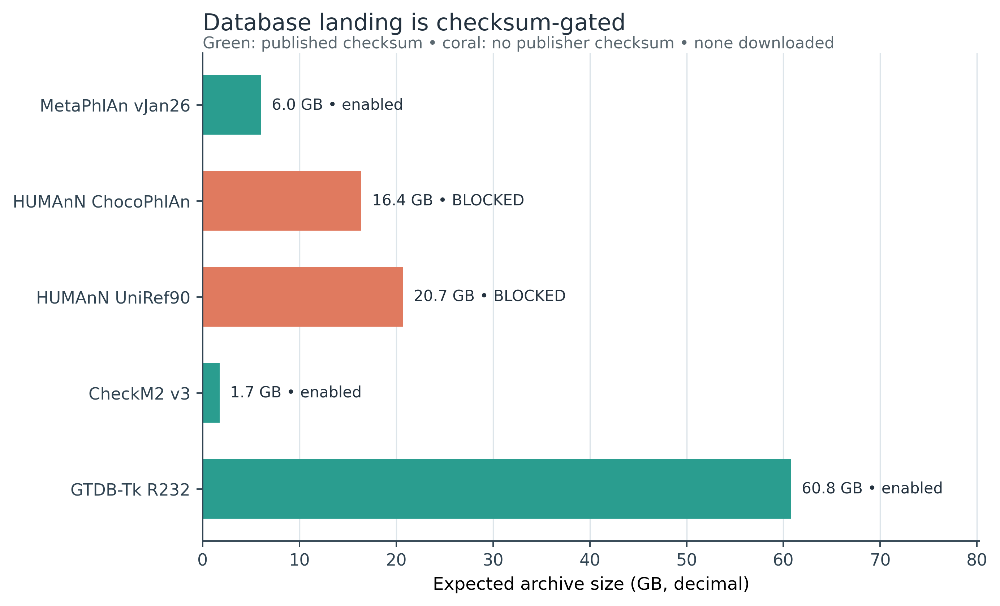

options(timeout = 600)
base_url <- "https://raw.githubusercontent.com/petemeng/metagenomics-best-practices/e219a2cd01609cc208a89e291cbd363ed7f2fbd8/"
files <- read.delim(paste0(base_url, "examples/11/files.tsv"))
for (i in seq_len(nrow(files))) {
path <- files$path[i]
dir.create(dirname(path), recursive = TRUE, showWarnings = FALSE)
if (!file.exists(path)) {
download.file(paste0(base_url, files$source[i]), path, mode = "wb")
}
}安装 bioBakery、组装分箱工具链与数据库
学习目标：把“装软件”拆成可重建的直接依赖、Linux-64 完整锁、可执行入口、内置安装测试、数据库 release、checksum、落盘路径和数据库依赖型验证；建立
bioBakery与组装分箱两个环境，并在依赖冲突出现时按功能边界拆分，而不是放松所有版本。
本章真实证据：2026-07-19 至 2026-07-20 在 native Linux 上实际求解并安装metagenome-biobakery-2026.07与metagenome-assembly-2026.07。组装环境逐个启动 8 个直接工具，MEGAHIT 与 SPAdes 内置测试均通过；CONCOCT 暴露 user-site NumPy 污染和setuptools 83移除pkg_resources的故障，锁为setuptools<81后复测通过。bioBakery 环境又发现 HUMAnN 3.9 链接的内置 Bowtie2 2.2.3/DIAMOND 2.0.15 覆盖了环境元数据声明的 2.5.5/2.2.4；按精确版本重链接后，五个入口和 HUMAnN 单元测试通过。
算力门槛：只创建环境建议 4 核、16 GB RAM、10 GB 可用磁盘和稳定网络；真正的数据库远大于软件包。当前 manifest 中 MetaPhlAn vJan26 归档为 6.014 GB，CheckM2 v3 为 1.735 GB，GTDB-Tk R232 为 60.806 GB 且解压后约 100 GB；HUMAnN 手册给出的 ChocoPhlAn 与 UniRef90 约为 16.4 GB 和 20.7 GB。没有服务器时可先在 Linux/WSL2 完成环境和内置测试，把数据库统一落在机构 HPC 的只读共享目录；不要在笔记本重复下载每位用户一份。
提示先确定这一点
工具能启动不等于数据库已就绪；把软件版本、数据库 release 和入口测试分别记录。
软件与数据库必须分别确认版本
bioBakery 3 的主工作流把 MetaPhlAn 分类、HUMAnN 核酸比对、蛋白翻译比对和通路重建连接起来 (Beghini 等 2021年)；MetaPhlAn 4 又把未培养物种级 genome bins 纳入 marker catalog (Blanco-Míguez 等 2023年)。在 genome-resolved 分支，MEGAHIT、metaSPAdes、MetaBAT2、MaxBin2、CONCOCT 与 DAS Tool 分别承担组装、分箱和整合 (Li 等 2015年; Nurk 等 2017年; Kang 等 2019年; Wu 等 2016年; Alneberg 等 2014年; Sieber 等 2018年)。
论文图中的箭头隐藏了三个工程事实：
- 两条分析分支的 Python、R、C/C++ 和系统库依赖并不相同；
- 同名命令能启动，不代表它读取了 Methods 声明的数据库；
- 数据库升级会改变 marker、SGB、参考基因与分类树，因此也是模型参数。
本次将依赖按分析合同拆成三块。前两块已安装并保存完整 Linux-64 锁；CheckM2、GUNC、GTDB-Tk 与 dRep 留到各自章节的隔离环境，避免把已复现的 solver 冲突带进组装环境。

下载本例数据与分析代码
数据与代码清单列出了本例的输入表、分析脚本和环境文件（约 0.2 MiB）。本清单不含原始 FASTQ 或大型数据库；是否需要它们取决于下文的分析起点。清单中的已计算结果仅供核对；读取结果表不等于重新运行统计模型或上游工具。
在新建文件夹中运行下面的 R 代码，下载完成后即可按正文中的相对路径读取文件。需要核验文件版本时，可使用带完整性检查的下载脚本。
入口检查比“environment created”多走一步
conda transaction 成功后，实际入口审计覆盖：
| Environment | Declared entry points | Installation test | Evidence |
|---|---|---|---|
metagenome-biobakery-2026.07 |
Python, MetaPhlAn, HUMAnN, Bowtie2, DIAMOND | humann_test |
frozen live command evidence |
metagenome-assembly-2026.07 |
Python, MEGAHIT, SPAdes, MetaBAT2, MaxBin2, CONCOCT, DAS Tool, CoverM | megahit --test, spades.py --test |
frozen live command evidence |
| full reference databases | 5 manifest rows | database-specific query | NOT RUN |

重要三次绿色测试仍不等于数据库已验证
MEGAHIT、SPAdes 和 HUMAnN 的内置测试确认软件安装完整。MetaPhlAn vJan26 profile、HUMAnN full database、CheckM2 v3 testrun 与 GTDB-Tk R232 check_install 需要数 GB 至约 100 GB 外部数据，本次没有下载，状态保持 NOT_DOWNLOADED / NOT_RUN。
数据库先过身份门，再过容量门
五个数据库条目中，MetaPhlAn vJan26、CheckM2 v3 与 GTDB R232 有 release-specific URL 和官方 MD5，可以进入下载队列。HUMAnN 的两个 full endpoint 在官方手册中没有发布 release checksum，因此默认阻断。

先锁定输入、版本和算力边界
环境配置与完整运行说明
安装与数据库任务的资源门槛
| Task | CPU | RAM | Free disk | Typical wall time | 本次状态 |
|---|---|---|---|---|---|
| Solve + install bioBakery | 2–4 | 8–16 GB | 5–10 GB | 10–60 min | executed |
| Solve + install assembly/binning | 2–4 | 8–16 GB | 5–10 GB | 10–60 min | executed |
| Built-in install tests | 4 | 8 GB | 5 GB scratch | <10 min | executed |
| MetaPhlAn vJan26 archive | 1 | 2 GB | >7.3 GB staging | network-dependent | not downloaded |
| HUMAnN full pair | 1 | 2 GB | >45 GB archive staging | network-dependent | blocked |
| CheckM2 v3 archive | 1 | 2 GB | >2.1 GB staging | network-dependent | not downloaded |
| GTDB R232 | 1 | 2 GB | >73 GB archive; ~100 GB unpacked | hours | not downloaded |
这些是安装门槛，不是样本分析资源。组装、分箱和 GTDB classification 的 CPU/RAM 需按第 10 篇的代表性任务重新测量。
固定文件
env/
├── biobakery.yml
├── biobakery-linux-64.lock
├── relink-biobakery-entrypoints.sh
├── assembly.yml
└── assembly-linux-64.lock
data/small/
├── 11-environment-evidence.tsv
├── 11-install-self-tests.log
├── 11-solver-audit.tsv
├── 11-database-manifest.tsv
└── 11-data-NOTICE.txt
db/download_db.sh
scripts/validate_article11_installation.py先核对源码：
sha256sum \
env/biobakery.yml \
env/assembly.yml \
env/biobakery-linux-64.lock \
env/assembly-linux-64.lock \
env/relink-biobakery-entrypoints.sh \
data/small/11-database-manifest.tsv
head -n 6 data/small/11-database-manifest.tsv
head -n 4 data/small/11-environment-evidence.tsv
cat data/small/11-install-self-tests.log
column -t -s $'\t' data/small/11-solver-audit.tsv
db/download_db.sh audit创建环境
mamba env create \
--file env/biobakery.yml \
--strict-channel-priority
env/relink-biobakery-entrypoints.sh \
metagenome-biobakery-2026.07
mamba env create \
--file env/assembly.yml \
--channel-priority flexibleassembly.yml 明确使用 nodefaults，且完整 explicit lock 会记录实际 channel/build；不能删除 lock 后仍宣称是同一个已验证环境。
内联作图函数
set.seed(20260719)
pal_pub <- c(
"bioBakery" = "#20639B",
"Assembly" = "#2A9D8F",
"Blocked" = "#E07A5F",
"Pass" = "#176B4D"
)
scale_color_pub <- function(...) {
ggplot2::scale_color_manual(values = pal_pub, ...)
}
scale_fill_pub <- function(...) {
ggplot2::scale_fill_manual(values = pal_pub, ...)
}
theme_pub <- function(base_size = 10) {
ggplot2::theme_classic(base_size = base_size) +
ggplot2::theme(
plot.title.position = "plot",
plot.title = ggplot2::element_text(face = "bold"),
axis.title = ggplot2::element_text(color = "#24323F"),
legend.position = "bottom"
)
}
save_pub <- function(plot, stem, width = 7.2, height = 4.8) {
ggplot2::ggsave(paste0(stem, ".pdf"), plot, width = width, height = height)
ggplot2::ggsave(
paste0(stem, ".png"), plot,
width = width, height = height, dpi = 350, bg = "white"
)
ggplot2::ggsave(
paste0(stem, ".tiff"), plot,
width = width, height = height, dpi = 350,
compression = "lzw", bg = "white"
)
}验证器用同一颜色语义输出三种格式；其 Python 确定性入口显式设置：
import random
random.seed(20260719)先拒绝隐形 channel 与 user site
环境外的 Python 也可能污染结果
首次直接运行 CONCOCT 时，宿主 user site 的 NumPy 2.2.6 抢在环境 NumPy 1.26.4 前被导入，触发 C extension ABI 错误。设置：
export PYTHONNOUSERSITE=1
unset PYTHONPATH后才看见环境内部的第二个真实故障：setuptools 83 已不提供 CONCOCT 依赖的 pkg_resources。将直接依赖锁为 setuptools<81，实际解析到 80.10.2 后，CONCOCT 1.1.0 正常启动。
这说明“激活了环境”仍要检查：
python -c 'import sys, numpy; print(sys.executable); print(numpy.__version__); print(numpy.__file__)'conda config --show channels
conda config --show channel_priority
export PYTHONNOUSERSITE=1
unset PYTHONPATH查看环境中真正被导入的解释器和 NumPy：
conda run -n metagenome-assembly-2026.07 \
env PYTHONNOUSERSITE=1 PYTHONPATH= \
python - <<'PY'
import numpy
import sys
print("python", sys.executable)
print("numpy_version", numpy.__version__)
print("numpy_path", numpy.__file__)
PY路径应位于 metagenome-assembly-2026.07 内。若出现 ~/.local，先解决污染再运行工具。
检查 1：以当日官方指针为准，但运行时不用指针
MetaPhlAn 4.2 发布时的主数据库是 vJan25；2026-07-14 又出现 vJan26，次日 mpa_latest 已切换。安装教程若长期写“下载 latest”，旧项目重跑会静默改变 marker catalog。本合同把：
mpa_vJan26_CHOCOPhlAnSGB_202605
MD5 7162b0c3493663dce9abef08ccc06aea
6,014,095,360 bytes同时写入 manifest。
检查 4：flexible channel priority 要用完整锁补偿
assembly core 在本次已验证 transaction 中使用 flexible priority，以满足较老的 R/Perl-based binner/refinement 依赖。代价是跨 channel 选择空间更大，因此：
nodefaults禁止隐式第三 channel；- 所有直接版本固定；
- Linux-64 explicit lock 完整保存；
- 入口和内置测试是发布门；
- 升级任一直接工具时重做全部入口，而非覆盖原环境。
注意坑 3：宿主
~/.local 抢先导入
如果 numpy.__file__ 不在目标环境，任何 ABI 结果都不可信。固定 PYTHONNOUSERSITE=1 并清空 PYTHONPATH。
检查 bioBakery 入口
env_name=metagenome-biobakery-2026.07
conda run -n "${env_name}" env PYTHONNOUSERSITE=1 PYTHONPATH= \
python --version
conda run -n "${env_name}" env PYTHONNOUSERSITE=1 PYTHONPATH= \
metaphlan --version
conda run -n "${env_name}" env PYTHONNOUSERSITE=1 PYTHONPATH= \
humann --version
conda run -n "${env_name}" bowtie2 --version 2>&1 |
grep -m1 ' version '
conda run -n "${env_name}" diamond version本次期望直接版本：
Python 3.12.13
MetaPhlAn 4.2.5
HUMAnN 3.9
Bowtie2 2.5.5
DIAMOND 2.2.4conda list 曾显示 Bowtie2 2.5.5 和 DIAMOND 2.2.4，但第一次直接运行却返回 2.2.3 与 2.0.15。原因是 HUMAnN 3.9 的发布归档也拥有 bin/bowtie2* 和 bin/diamond；HUMAnN 最后链接时覆盖了独立软件包文件。创建或按 explicit lock 重建环境后，必须执行：
env/relink-biobakery-entrypoints.sh \
metagenome-biobakery-2026.07脚本只按原 channel 合同强制重链接 bowtie2=2.5.5 与 diamond=2.2.4，随后检查真实入口字符串。只看 conda list 无法发现这种同路径覆盖。
随后运行不依赖 full database 的官方测试：
conda run -n "${env_name}" env PYTHONNOUSERSITE=1 PYTHONPATH= \
humann_test检查 3：入口失败应进入证据，而不是从日志删除
CONCOCT 初次失败揭示了两层问题：
- user site NumPy 污染；
setuptools 83与旧pkg_resources入口不兼容。
固化日志同时保留 CONCOCT 与 HUMAnN 文件冲突的 EXPECTED_FAIL，以及两次修复后的 PASS。这比只展示最终绿色结果更能支持版本 ceiling 与重链接步骤的来源。
检查组装与分箱入口
“全部塞进一个环境”会扩大故障半径
本地 dry solve 将 assembly core 与 CheckM2 1.1.0 合并时失败：CheckM2 的 Python/TensorFlow/zlib 约束与 CoverM 的 zlib 约束无法形成同一个 transaction。继续尝试以下做法会破坏审计：
- 删除版本号让 solver 任意降级；
- 混入
defaults后只看命令是否出现； - 用
pip install --upgrade覆盖 conda 文件； - 把 solver warning 当作无关紧要。
更稳的结构是：
read profiling -> bioBakery environment
assembly + binning -> assembly environment
MAG quality -> isolated CheckM2/GUNC environment
MAG taxonomy -> isolated GTDB-Tk environment文件表、FASTA、BAM 和 TSV 是环境间接口。它们比共享一个 Python site-packages 更容易审核。
env_name=metagenome-assembly-2026.07
run_clean() {
conda run -n "${env_name}" \
env PYTHONNOUSERSITE=1 PYTHONPATH= PYTHONHASHSEED=0 "$@"
}
run_clean python --version
run_clean megahit --version
run_clean spades.py --version
run_clean metabat2 -h 2>&1 | head -n 3
run_clean run_MaxBin.pl -v
run_clean concoct --version
run_clean DAS_Tool --version
run_clean coverm --versionMetaBAT2 不接受 --version；误用该参数会抛出 unknown_option。其版本位于 metabat2 -h 的头部。本次观测为：
MetaBAT ... (version 2:2.18; 20260506_185317)再执行两个内置安装测试：
test_root="$(mktemp -d "${TMPDIR:-/tmp}/article11-tests.XXXXXX")"
trap 'rm -rf "${test_root}"' EXIT
cd "${test_root}"
run_clean megahit --test
run_clean spades.py --test验收标志分别是 ALL DONE 与 TEST PASSED CORRECTLY。内置数据不是宏基因组 benchmark，不能从日志中的时间或内存外推真实项目。
注意坑 2：把
conda env create 的 exit 0 当成全部入口通过
本次 CONCOCT 就是在 transaction 成功后才暴露 import 故障。逐个执行 --version/-h，再跑内置测试。
注意坑 10：用内置 assembler test 的 10 秒耗时申请项目资源
内置数据极小，只验证安装。项目资源必须用同一工具、参数和代表性真实输入重新计量。
修复 CONCOCT 的已复现入口故障
若出现：
ModuleNotFoundError: No module named 'pkg_resources'先确认 YAML 包含：
- setuptools<81再按声明更新，而不是单独 pip install：
mamba install -n metagenome-assembly-2026.07 \
-c conda-forge -c bioconda \
--override-channels \
--channel-priority flexible \
"setuptools<81"
conda run -n metagenome-assembly-2026.07 \
env PYTHONNOUSERSITE=1 PYTHONPATH= \
concoct --version本次解析到 setuptools 80.10.2，CONCOCT 返回 concoct 1.1.0。该 ceiling 是对当前旧入口的兼容性补丁；CONCOCT 上游若移除 pkg_resources 依赖，应在新环境重做全套测试后升级。
导出两层锁
环境 YAML 与完整锁解决不同问题
env/assembly.yml 记录人类可审阅的直接意图：
MEGAHIT = 1.2.9
SPAdes = 4.3.0
MetaBAT2 = 2.18
...但同一组直接版本仍可能在未来解析到不同的 Python patch、C library、R package build 或编译器 runtime。Linux-64 explicit lock 则记录求解后每个归档的精确 URL、build 与哈希：
human-readable YAML
└── solver on linux-64
└── complete explicit transaction
└── executable entry-point audit因此二者都要保存：
- YAML 用于审阅、跨平台重新求解和升级；
- explicit lock 用于同平台重建已验证 transaction；
- 入口日志用于证明程序真正启动；
- 内置测试用于发现动态链接、Python import 和配套资源故障。
Bioconda 提供生命科学软件分发，但并不会替 Methods 自动决定工具版本或数据库 release (Grüning 等 2018年)。
conda env export \
-n metagenome-biobakery-2026.07 \
--from-history > biobakery.from-history.yml
conda list \
-n metagenome-biobakery-2026.07 \
--explicit > env/biobakery-linux-64.lock
conda env export \
-n metagenome-assembly-2026.07 \
--from-history > assembly.from-history.yml
conda list \
-n metagenome-assembly-2026.07 \
--explicit > env/assembly-linux-64.lock同平台重建：
mamba create \
-n metagenome-assembly-from-lock \
--file env/assembly-linux-64.lockexplicit lock 只适用于其记录的平台。macOS、ARM64 或不同 glibc 环境要从 YAML 重新求解并形成自己的锁与入口证据。
注意坑 1：只保存 environment.yml，不保存 explicit lock
未来 solver 仍可能解析到不同 build。YAML 是意图，explicit lock 才是已验证 Linux-64 transaction。
检查数据库 manifest
数据库是统计模型的一部分
MetaPhlAn 4 根据 marker database 将 reads 分配到 SGB；HUMAnN 根据 ChocoPhlAn 与 UniRef 将 reads 分配到物种特异基因家族和未分类蛋白；CheckM2 的模型依赖其 DIAMOND reference；GTDB-Tk 的 ANI、marker alignment 与 tree placement 依赖 GTDB release (Chklovski 等 2023年; Chaumeil 等 2020年)。
因此 Methods 至少要同时写：
[ + + + ]
只写 “MetaPhlAn 4” 无法判断使用 vJun23、vJan25 还是 vJan26。2026-07-15 官方 mpa_latest 已指向 mpa_vJan26_CHOCOPhlAnSGB_202605；若脚本运行时解析 latest，同一命令在四天前后会读取不同参考。
checksum 解决完整性，release 解决语义
checksum 相同意味着字节相同，不意味着数据库适用于当前软件。反过来，只写 release 名也不能发现传输截断。下载门要同时验证：
- URL 是否包含不可变 release；
- checksum 是否来自官方发布方；
- archive bytes 是否匹配；
- 解压路径是否独立且只读；
- 软件是否报告预期 database release；
- 小型 validation query 是否通过。
GTDB-Tk 是典型例子：2.7.x 对应 R232，官方兼容表将 R226 的最大软件版本限制为 2.6.1。把 GTDB-Tk 2.7.2 与 R226 拼在一起，即使文件完整，也不是受支持合同。
当前 manifest 还固定 CheckM2 v3 的 MD5 07c10655620843b517d0df0c160d911f 与 GTDB R232 的 MD5 25a59e0352b1fd150c589f56559767d4。这些值只授权下载和字节验收；数据库特异测试仍保持未运行。
没有官方 checksum 时应停下来
HUMAnN 3.9 的 humann_databases 入口推荐：
humann_databases --download chocophlan full INSTALL_LOCATION
humann_databases --download uniref uniref90_diamond INSTALL_LOCATION其代码将两条下载分别解析为 full_chocophlan.v201901_v31.tar.gz 和 uniref90_annotated_v201901b_full.tar.gz；手册给出约 16.4 GB 和 20.7 GB 的大小，并要求同一目录内数据库版本一致。但发布方没有为这两个归档给出 checksum，带版本的文件名本身也不能证明远端字节不可变。正确动作不是填一个猜测值，而是：
- 管理员下载到 staging；
- 保存 retrieval time、最终 URL、HTTP headers 和文件长度；
- 计算本地 SHA-256；
- 将归档复制到机构控制的 immutable object/path；
- 用该内部 URL 与 SHA-256 更新 manifest；
- 第二位执行者重新下载并复核。
在完成之前，自动下载器返回非零退出码。
db/download_db.sh list
db/download_db.sh audit关键列：
database_id
tool_version
release_id
archive_url
checksum_algorithm
expected_checksum
expected_compressed_bytes
download_gate
validation_statusdownload_gate=enabled 只表示具备 release-specific URL 与官方 checksum。当前所有 validation_status 仍是 NOT_DOWNLOADED。
检查 2：软件 release 与数据库 release 不做模糊配对
| Tool | Software | Database contract | Current status |
|---|---|---|---|
| MetaPhlAn | 4.2.5 | vJan26 / published MD5 | archive not downloaded |
| HUMAnN | 3.9 | full ChocoPhlAn + UniRef90 | blocked: upstream checksum unpublished |
| CheckM2 | 1.1.0 | Zenodo record 14897628, version 3 | archive not downloaded |
| GTDB-Tk | 2.7.2 | R232 / official MD5 | archive not downloaded |
CheckM2 v3 页面还明确限定 DIAMOND 2.1.11。未来建立 CheckM2 环境时，不能因为 assembly 环境已有 DIAMOND 2.2.4 就复用它。
注意坑 8：把数据库复制到每个环境目录
软件环境应小而可重建；数据库应集中、只读、按 release 分目录，并由路径或环境变量显式绑定。
注意坑 9：删除旧数据库后再测试新数据库
新 release 若失败就无法回滚。为 archive、解压目录、上一版和临时空间同时预留容量。
先盘点共享盘，再显式下载
export DB_ROOT=/shared/databases/metagenome
df -h "${DB_ROOT}"
mkdir -p "${DB_ROOT}"
DB_ROOT="${DB_ROOT}" db/download_db.sh download metaphlan-vJan26
DB_ROOT="${DB_ROOT}" db/download_db.sh download checkm2-v3
DB_ROOT="${DB_ROOT}" db/download_db.sh download gtdbtk-r232脚本行为：
- 拒绝 Git 仓库内的
DB_ROOT； - 拒绝 mutable
/latest/URL； - 在已知 archive size 时预留 20% staging 余量；
- 下载到
.part； - 校验官方 MD5；
- 原子重命名；
- 写 release/checksum sentinel。
例：只复核已下载的 GTDB R232：
DB_ROOT="${DB_ROOT}" db/download_db.sh verify gtdbtk-r232检查 5：数据库不进入 Git，也不进入常规 CI
将 60.8 GB GTDB archive 放进 Git LFS 仍然不是合理分发。更稳的职责分离是：
Git
└── manifest + downloader + checksum + Methods
shared storage / object store
└── immutable archive + unpacked release + validation sentinel
workflow
└── read-only bind + explicit release path常规 CI 验证 manifest、checksum 格式、URL 可变性规则和 negative control；计划性数据库维护任务才执行大下载。
注意坑 5：写
mpa_latest 或 GTDB latest
可变指针适合发现新 release，不适合 Methods 和复现。先解析一次，再把 release-specific URL 与 checksum 固化。
注意坑 6：看到 MD5 就以为数据库兼容
MD5 只确认 bytes。仍需核对 tool/database compatibility table，并运行数据库特异 test/query。
HUMAnN full database 保持 fail-closed
下面的命令应失败，而且必须在询问 DB_ROOT 前失败：
db/download_db.sh download humann-chocophlan-full
# ERROR: humann-chocophlan-full is fail-closed:
# blocked-no-upstream-checksum管理员完成 staging 与本地 SHA-256 后，更新 manifest 的 immutable URL、checksum algorithm、checksum、精确 bytes 和 retrieval date，双人复核，再将 gate 改为 enabled。不要在个人分析脚本里绕过 gate。
注意坑 7：HUMAnN endpoint 没 checksum 仍自动放行
大小近似值不能替代 checksum。先 staging、计算 SHA-256、复制到不可变内部位置、双人复核，再启用。
解压后仍要运行数据库特异结果核对
MetaPhlAn：
export METAPHLAN_DB="${DB_ROOT}/metaphlan/mpa_vJan26_CHOCOPhlAnSGB_202605"
conda run -n metagenome-biobakery-2026.07 \
metaphlan --version
# 用官方或明确公开的小 FASTQ 真正跑一次后，检查 profile header：
grep '^#' sample_profile.tsvHUMAnN：
conda run -n metagenome-biobakery-2026.07 \
humann_config --update database_folders nucleotide \
"${DB_ROOT}/humann/chocophlan/<frozen-release>"
conda run -n metagenome-biobakery-2026.07 \
humann_config --update database_folders protein \
"${DB_ROOT}/humann/uniref90/<frozen-release>"
conda run -n metagenome-biobakery-2026.07 humann_config --printCheckM2 与 GTDB-Tk 放在各自隔离环境后：
export CHECKM2DB="${DB_ROOT}/checkm2/zenodo-14897628-v3/uniref100.KO.1.dmnd"
checkm2 testrun
export GTDBTK_DATA_PATH="${DB_ROOT}/gtdbtk/R232"
gtdbtk check_install只有上述命令通过，才能将 manifest 状态从 NOT_DOWNLOADED 改为 VALIDATED。
注意坑 4：为了 CheckM2 把整个 assembly 环境降级
一个工具的 TensorFlow/Python/zlib 约束不应改变全部 assembler 与 binner。拆成独立环境，以文件作为接口。
复核保存证据与三张图
容量预算按归档、解压、临时副本和并发相加
数据库落地的最低共享盘预算为：
[ S_{} = S_{} + S_{} + S_{} + S_{} ]
保留旧 release 直到新 release 通过 validation query，才能回滚。GTDB R232 归档本身 60.806 GB，官方文档给出约 100 GB reference data；若下载、解压和保留上一版同时发生，不能只申请 100 GB。
conda run -n metagenome-platform-smoke-2026.07 python \
scripts/validate_article11_installation.py \
--project-root . \
--output-dir results/11-install-biobakery-assembly \
--figure-dir figures
cat results/11-install-biobakery-assembly/installation-summary.json例行验证只读 frozen locks/evidence，执行 downloader 的 audit 与 fail-closed negative control，并生成三张图；不会下载数据库。
检查 6：安装测试不替代真实数据正控与负控
内置测试回答“程序能否完成开发者给定的小流程”。正式分析还需要：
- 已知组成 mock 或官方 demo positive control；
- 空输入/负对照行为；
- 输出 schema 与非空阈值；
- database release 写入输出 header/log；
- 真实项目代表性子集的资源实测；
- 旧 release 与新 release 的差异报告。
列出软件、数据库与环境边界
只有相应 database validation 已完成时，才把数据库句子放进研究 Methods：
Software environments were provisioned with Mamba 2.5.0 using only the conda-forge and Bioconda channels. Read-based profiling used MetaPhlAn 4.2.5 and HUMAnN 3.9 under Python 3.12.13; after HUMAnN installation, the exact Bowtie2 2.5.5 and DIAMOND 2.2.4 packages were relinked and their executable versions were re-audited. Assembly and binning used MEGAHIT 1.2.9, SPAdes 4.3.0, MetaBAT2 2.18, MaxBin2 2.2.7, CONCOCT 1.1.0, DAS Tool 1.1.7, and CoverM 0.8.0 under Python 3.10.20; setuptools was constrained to <81 for CONCOCT compatibility. User-site Python packages were disabled. Direct environment specifications, the deterministic relink script, and complete Linux-64 explicit package locks were archived. MetaPhlAn analyses used the mpa_vJan26_CHOCOPhlAnSGB_202605 database (archive MD5: 7162b0c3493663dce9abef08ccc06aea). All external databases were installed in release-specific, read-only directories and verified against publisher-provided checksums before analysis. The exact database paths, checksums, command lines, and validation-query logs were retained with the workflow outputs.
若 HUMAnN full archive 只记录了本地 SHA-256，补充：
Because the upstream HUMAnN endpoint did not publish a release checksum, the archive was staged on [retrieval date], its final URL, HTTP metadata, byte count, and SHA-256 were recorded, and the checksum-identified archive was copied to an immutable institutional location before use.
不要写：
MetaPhlAn and HUMAnN were run with default databases.换到自己的研究中，先检查哪些条件？
安装本身不读取样本，但你的分析合同会决定需要哪些环境与数据库。
只做 read-based taxonomic profiling
需要：
env/biobakery.yml；- MetaPhlAn release-specific database；
- QC 后的 FASTQ；
- 一个已知 mock 或官方 positive control；
- profile header 中的 database identity。
HUMAnN 可以不装 full database，除非需要功能 profile。
做 HUMAnN 功能分析
额外需要：
- checksum-frozen ChocoPhlAn；
- checksum-frozen UniRef90 或明示选择的替代；
- 两者 release 一致性记录；
- Bowtie2、DIAMOND 与 MetaCyc/pathway mapping 版本；
- demo/positive control 的非空 gene-family 与 pathway 输出。
做短读组装与 MAG
先安装 assembly environment；随后按章节分别建立：
- CheckM2/GUNC 质控环境；
- GTDB-Tk 分类环境；
- dRep 去冗余环境；
- 相应数据库和 checksum sentinel。
不要为了方便让后续环境覆盖已经验证的 assembly environment。
共享数据库管理员清单
每个 release 目录至少包含：
README.txt
archive/
archive checksum sentinel
unpacked/
tool-version.txt
database-version.txt
validation-command.txt
validation.log
permissions.txt目录切换前完成：
- 下载与 checksum；
- 解压；
- tool/database compatibility；
- validation query；
- 代表性样本对照；
- 只读权限；
- workflow 显式路径更新；
- rollback 演练。
图中应该保留哪些信息？
三张图使用同一语义：
- 蓝色：read-based bioBakery；
- 绿色：assembly/binning 与 checksum-enabled；
- 珊瑚色：冲突或 fail-closed；
- 所有图中文字、轴和状态均为英文；
- PDF 用于矢量排版，PNG 用于网页/公众号，350 dpi LZW TIFF 用于期刊。
重绘：
MPLCONFIGDIR=.matplotlib \
conda run -n metagenome-platform-smoke-2026.07 python \
scripts/validate_article11_installation.py \
--project-root . \
--output-dir results/11-install-biobakery-assembly \
--figure-dir figures发表前检查：
file figures/11-environment-boundaries.*
file figures/11-toolchain-entrypoints.*
file figures/11-database-storage-contract.*回到最初的问题
软件装进环境只是第一道门；版本入口、完整依赖锁、数据库 release 与 checksum 必须分别验收。
参考文献
- bioBakery 3、MetaPhlAn 4 及 HUMAnN 工作流：(Beghini 等 2021年; Blanco-Míguez 等 2023年)
- 组装与分箱方法：(Li 等 2015年; Nurk 等 2017年; Kang 等 2019年; Wu 等 2016年; Alneberg 等 2014年; Sieber 等 2018年)
- Bioconda 软件分发：(Grüning 等 2018年)
- CheckM2 与 GTDB-Tk：(Chklovski 等 2023年; Chaumeil 等 2020年)
- MetaPhlAn official releases
- MetaPhlAn official database index
- HUMAnN official user manual
- CheckM2 database version 3, Zenodo 14897628
- GTDB-Tk 2.7.2 installation and reference compatibility